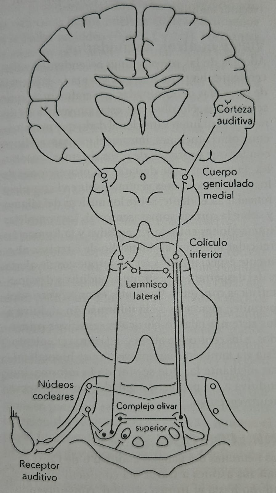

Oír es un proceso fisiológico complejo que nos permite a nosotros, los seres vivos, recibir y analizar las vibraciones de las moléculas del medio externo, dentro de un amplio rango de fecuencias e intensidades
Los sonidos naturales (incluida la vocalización animal y el lenguaje humano) se presentan como patrones acústicos complejos caracterizados por su amplio espectro de frecuencias y su patrón temporal
El interés en el proceso auditivo se debe a una capacidad exclusiva del ser humano: el lenguaje.
El sistema nervioso debe llevar a cabo tareas como la localización de la fuente sonora, el análisis de la intensidad (magnitud del estímulo), el reconocimiento de sonidos nuevos y su diferencia de los ya conocidos, el almacenamiento en la memoria de los diferentes estímulos, la audición binaural (sonido en 3D),etc. Estos sonidos se realizan en la vía auditiva a lo largo de sus diversos niveles.
